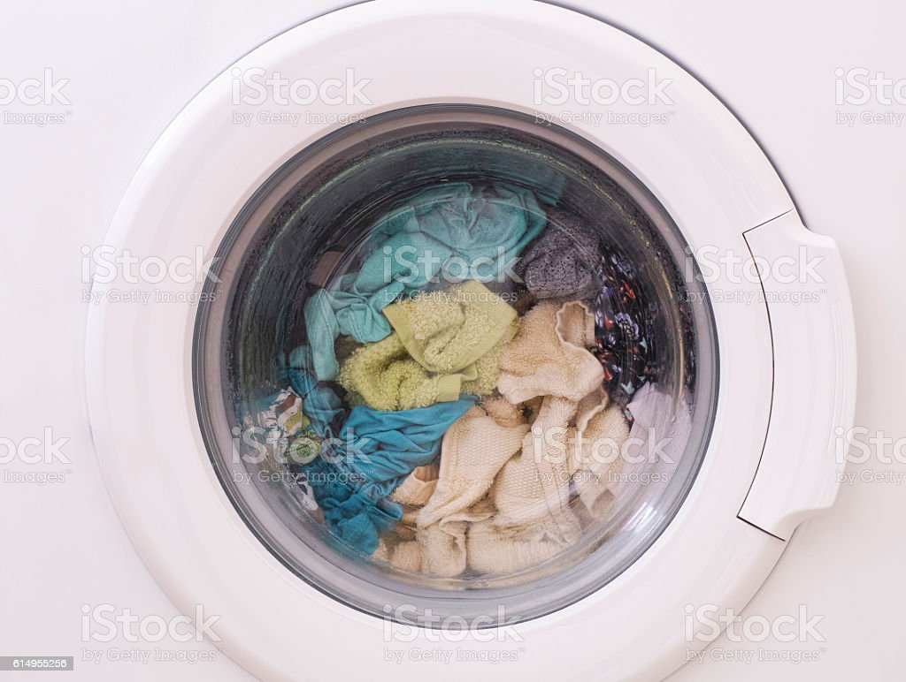

Wet cleaning
Wet cleaning is a safe and eco-friendly method of cleaning clothes using water and specialized detergents without harsh chemicals.
Laundry management refers to the process of managing laundry operations, including order processing, inventory management, customer service, billing, and reporting. Laundry management systems automate these processes to enhance efficiency and profitability.
Laundry management systems offer services such as order management, inventory management, customer management, billing and payment, and reporting and analytics. These services help laundry businesses manage their operations efficiently, provide personalized services to customers, and make informed decisions for business growth.
Wet cleaning is a more environmentally friendly alternative to dry cleaning, using water and specialized biodegradable detergents to clean delicate fabrics. It is considered safer for the environment and human health.
Wash and laundry refer to the process of cleaning clothes and fabrics using water and detergent. This method is suitable for most types of fabrics, including those that can be machine washed.
Dry cleaning is a process of cleaning clothes and fabrics using a solvent instead of water. It is used for delicate or sensitive fabrics that cannot withstand the rigors of a regular washing machine.


Wet cleaning is a safe and eco-friendly method of cleaning clothes using water and specialized detergents without harsh chemicals.
Wash cleaning is a process of cleaning clothes in a washing machine using water, detergent, and sometimes other additives like fabric softeners.
Dry cleaning is a method of cleaning clothes using a solvent instead of water, which is effective for delicate or stained fabrics.